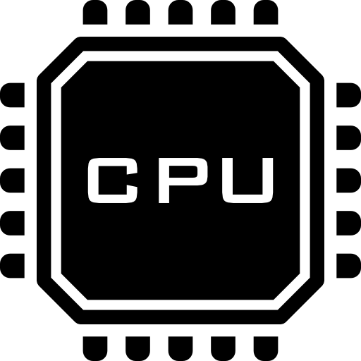

INFRAESTRUCTURA
Hardware y software propio
La ciencia abierta necesita músculo técnico. Esta es la infraestructura computacional que hace posible procesar imagen médica a gran escala, y el software que desarrollamos y compartimos con la comunidad.
0
Nodos de computación

0
Unidades de procesamiento (CPUs)
0
Memoria RAM agregada
0
GPUs NVIDIA Volta V100 · 81 GB por GPU · servidor de IA dedicado
0
Almacenamiento general
0
Gestión DICOM · escalable a 800 TB